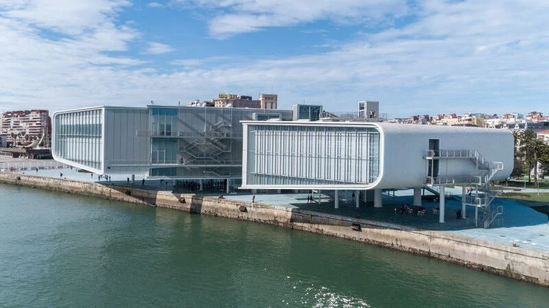

CENTRO BOTIN
L'HISTOIRE
L'histoire du Centro Botín commence avec la vision de la Fondation Botín, une organisation dédiée au développement social et culturel. Le centre a été conçu par l'architecte Renzo Piano, qui a cherché à créer un espace artistique novateur. Son objectif était de transformer le front de mer de Santander en un lieu de convergence culturelle, tout en intégrant harmonieusement le bâtiment dans son environnement côtier.
Le Centro Botín a ouvert ses portes en 2017 et a immédiatement attiré l'attention pour son design saisissant et son engagement envers l'art contemporain. La structure en forme de navire, avec ses lignes élégantes et son utilisation créative de l'espace, est devenue un repère architectural emblématique. Le centre a enrichi le paysage culturel de la région en offrant des expositions, des ateliers éducatifs et des programmes innovants, attirant un large public local et international.
Le Centro Botín a laissé une empreinte durable en tant que catalyseur de la culture et de l'éducation. Outre ses expositions d'art contemporain, le centre s'est engagé à favoriser la créativité, l'apprentissage et le développement communautaire. Sa contribution à la scène artistique et éducative de Santander et sa région a renforcé son rôle en tant que pôle d'innovation culturelle.
INFUENCE DE PIANO
L'influence de Renzo Piano sur le Centro Botín se manifeste tout d'abord par une architecture qui s'inscrit harmonieusement dans son environnement côtier. Piano a conçu le bâtiment avec une sensibilité particulière à son emplacement, utilisant des matériaux légers et des lignes élégantes qui évoquent la mer et le paysage environnant. Le centre semble presque flotter au-dessus du sol, créant une relation organique avec son cadre côtier.
L'architecte a également influencé l'expérience visuelle et spatiale à l'intérieur du Centro Botín. Il a intégré des espaces lumineux et aérés, maximisant l'utilisation de la lumière naturelle. Les vastes fenêtres offrent des vues sur la baie et créent une atmosphère où l'art et la nature coexistent harmonieusement.
Renzo Piano a également contribué à l'orientation culturelle et communautaire du Centro Botín. Il a conçu un espace polyvalent qui va au-delà des expositions artistiques, incluant des salles pour des conférences, des ateliers éducatifs et des événements sociaux. Son design a favorisé la création d'un lieu dynamique où l'art, l'éducation et la communauté se rencontrent.
DÉCOUVRIR
Si l’article vous a plu, n’hésitez pas à lire celui sur le Whitney Museum, une autre grande œuvre de Piano.